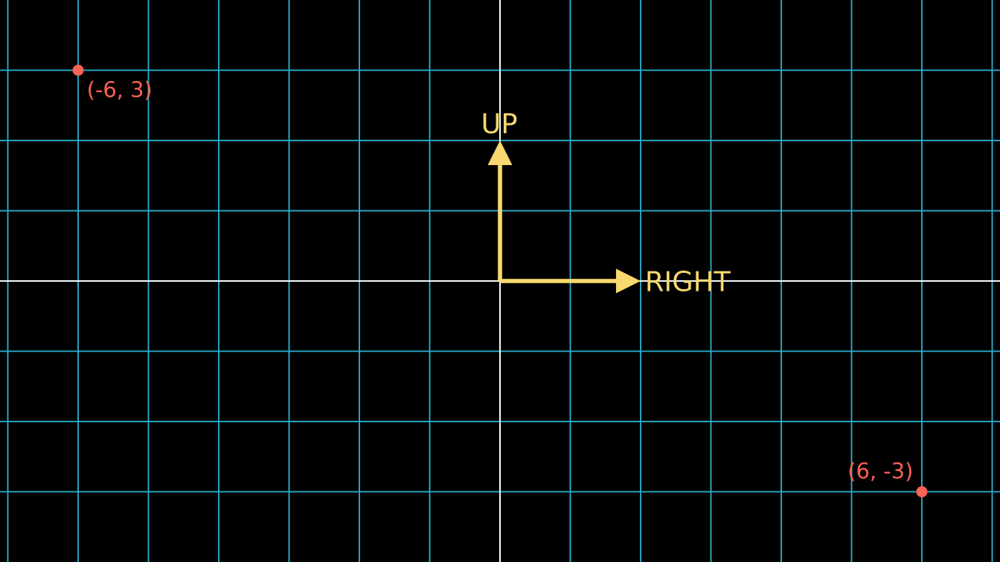
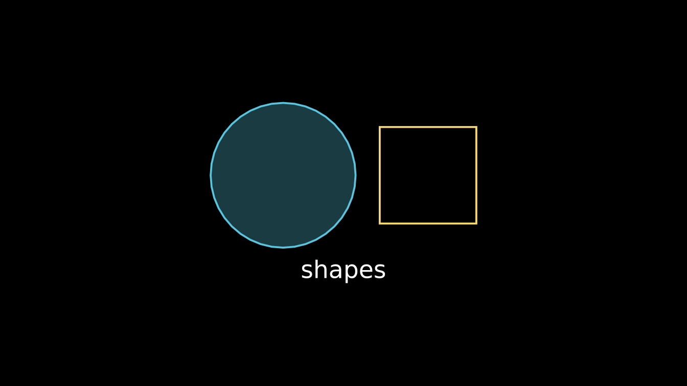
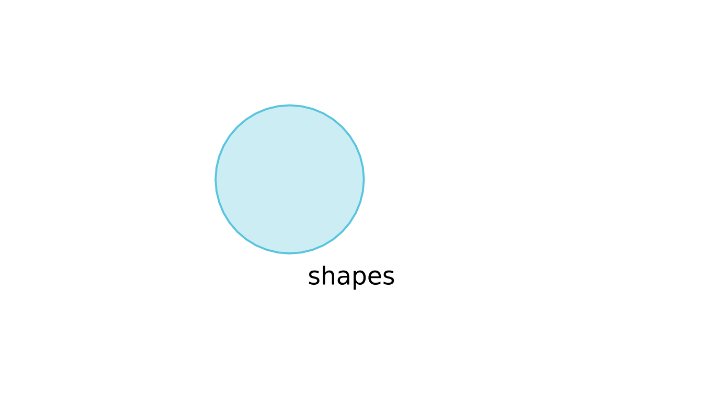
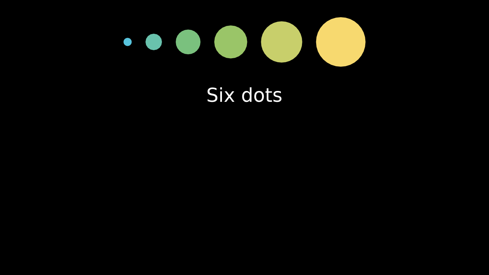
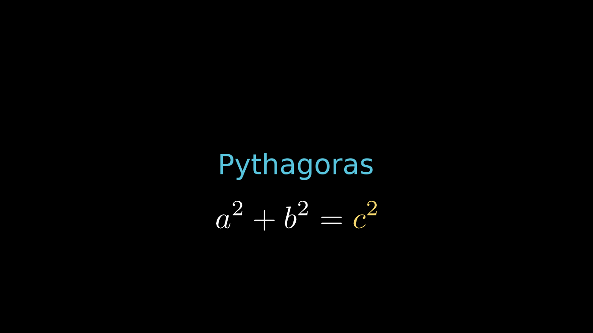

manimR is a native R port of Manim Community, the animation
engine behind many explanatory math videos. You describe a scene in R
code: shapes, text, formulas and graphs, and how they move. manimR draws
every frame and hands the frames to ffmpeg, which writes a
video, a GIF or a set of images. There is no Python involved; the
drawing is done with grid on an offscreen ragg device.
The API follows Python manim closely, so the large body of manim examples and tutorials translates almost line by line. If you already know Python manim, read Coming from Python manim next. If you do not, this vignette is the place to start.
Installation
Install the package from GitHub:
# install.packages("remotes")
remotes::install_github("adamrsophie/manimR")manimR itself is pure R, but some features call external programs:
| Program | Needed for | How to get it |
|---|---|---|
ffmpeg |
Video output (MP4, MOV, WebM, GIF) |
brew install ffmpeg,
sudo apt install ffmpeg, or https://ffmpeg.org
|
LaTeX with dvisvgm
|
Tex(), MathTex() and everything built on
them |
tinytex::install_tinytex() then
tinytex::tlmgr_install("dvisvgm"), or a full TeX Live or
MiKTeX |
typst |
Typst() and MathTypst()
|
https://typst.app; set
manim_config(typst = "/path/to/typst") if it is not on the
PATH
|
| Python with Pygments (optional) | Syntax highlighting of any language in Code(); without
it, a built in highlighter handles R and Python |
pip install pygments |
Without ffmpeg you can still draw mobjects with
plot() and save single frames as PNG files. Without LaTeX,
Text() still works, since it uses your system fonts.
manim_check() reports which of these programs it can
find (it is the counterpart of manim checkhealth):
manim_check()
#> ffmpeg /usr/bin/ffmpeg
#> ffprobe /usr/bin/ffprobe
#> latex /home/runner/.TinyTeX/bin/x86_64-linux/latex
#> dvisvgm /home/runner/.TinyTeX/bin/x86_64-linux/dvisvgm
#> typst /home/runner/work/_temp/typst-x86_64-unknown-linux-musl/typst
#> pygments /usr/bin/python3The core ideas
Five ideas cover most of manimR.
-
Mobjects (mathematical objects) are the things you
see: a
Circle(), aSquare(), aText(), anAxes(), aMathTex()formula. Most are vectorized mobjects (VMobject), whose outlines are made of cubic Bezier curves. Mobjects can contain other mobjects, and groups such asVGroup()hold several at once. -
Scenes hold the mobjects and run the show. You
write a scene as a class with a
construct()method; rendering the scene callsconstruct(). -
Animations change mobjects over time:
Create()draws a shape,Transform()morphs one shape into another,FadeIn()fades in. A scene runs them withself$play()and pauses withself$wait(). - The camera turns the scene into pixels. Its frame is 8 units tall and, at the usual 16:9 aspect ratio, about 14.2 units wide, with the origin in the middle, x to the right and y up. Positions are in these units, so a scene looks the same at every resolution.
-
Rendering plays the scene from start to finish,
captures every frame and writes the output file.
render()does this, with options for the resolution, frame rate and file format.
Directions are plain numeric vectors of length 3: UP is
c(0, 1, 0) and RIGHT is
c(1, 0, 0), so 2 * UP + RIGHT is the point (1,
2). The picture below shows the frame with a NumberPlane()
grid (one square per unit), the direction constants, and two points
labeled with their coordinates.
plane <- NumberPlane()
arrows <- VGroup(
Arrow(ORIGIN, 2 * UP, buff = 0, color = YELLOW),
Arrow(ORIGIN, 2 * RIGHT, buff = 0, color = YELLOW)
)
labels <- VGroup(
Text("UP", font_size = 28, color = YELLOW)$next_to(arrows[1], UP, buff = 0.1),
Text("RIGHT", font_size = 28, color = YELLOW)$next_to(arrows[2], RIGHT, buff = 0.1)
)
corner <- function(point, label, direction) {
VGroup(
Dot(point, color = RED),
Text(label, font_size = 22, color = RED)$next_to(point, direction, buff = 0.15)
)
}
corners <- VGroup(
corner(c(-6, 3, 0), "(-6, 3)", DR),
corner(c(6, -3, 0), "(6, -3)", UL)
)
plot(VGroup(plane, arrows, labels, corners))
Your first mobjects
Constructors such as Circle() and Square()
create mobjects. Their arguments match Python manim’s, and RStudio
completes them. Methods are called with $, and every method
that changes a mobject returns the mobject, so calls chain:
circle <- Circle(radius = 1.5, color = BLUE)$set_fill(BLUE, opacity = 0.3)
square <- Square(side_length = 2, color = YELLOW)$next_to(circle, RIGHT, buff = 0.5)
label <- Text("shapes", font_size = 36)$next_to(VGroup(circle, square), DOWN)
shapes <- VGroup(circle, square, label)$move_to(ORIGIN)
plot(shapes)
plot() draws a mobject as a single frame on the scene’s
black background. It is the fastest way to check a layout: no video is
written, and the picture appears in the RStudio Plots pane. Pass
background_color to change the background:

Mobjects are R6 objects, which means they are modified in place:
square$shift(UP) moves square itself, and
b <- a does not copy a. Use
$copy() when you want an independent copy, as above, where
the black label is a copy and the original stays white.
Every mobject stores its outline in $points, an n x 3
matrix of Bezier control points (four rows per cubic curve):
dim(square$points)
#> [1] 16 3
square$get_center()
#> [1] 1.7500 0.3675 0.0000
square$width
#> [1] 2Your first scene
A scene is an R6 class that inherits from Scene and
defines a construct() method. Inside
construct(), self is the scene:
self$play() runs one or more animations and
self$wait() holds the current frame.
SquareToCircle <- R6::R6Class("SquareToCircle", inherit = Scene,
public = list(construct = function() {
circle <- Circle()$set_fill(PINK, opacity = 0.5)
square <- Square()$rotate(PI / 4)
self$play(Create(square))
self$play(Transform(square, circle))
self$wait(0.5)
})
)Reading it line by line:
-
R6::R6Class("SquareToCircle", inherit = Scene, ...)defines a new scene class. The first argument is the class name, which also names the output file. -
circleis a pink, half transparent circle, andsquarea square turned by 45 degrees. Creating them does not show them yet. -
self$play(Create(square))draws the square’s outline and adds it to the scene. -
self$play(Transform(square, circle))morphs the square into the circle. The mobject on screen is stillsquare; it now looks likecircle. -
self$wait(0.5)holds the last frame for half a second.
Each play() lasts one second unless you pass
run_time, and wait() defaults to one second
too.
This vignette shows scenes with a knitr engine (see RStudio, knitr, Quarto and Shiny); in a script you render them yourself, as shown in Rendering below.
A shorter way: manim_scene()
For quick experiments, manim_scene() builds the scene
class from a plain function whose argument is the scene:
Shapes <- manim_scene(function(self) {
shapes <- VGroup(
Circle(color = BLUE)$set_fill(BLUE, 0.5),
Square(color = GREEN)$set_fill(GREEN, 0.5),
Triangle(color = RED)$set_fill(RED, 0.5)
)$arrange(RIGHT, buff = 1)
self$play(LaggedStart(lapply(shapes$submobjects, GrowFromCenter), lag_ratio = 0.3))
self$play(shapes$animate$arrange(DOWN, buff = 0.3)$scale(0.6), run_time = 1.5)
self$wait(0.5)
}, name = "Shapes")manim_scene() also takes a setup function,
run before construct, and a base class such as
MovingCameraScene. render() accepts a bare
function too, which it wraps with manim_scene() for
you.
Method chaining and the $animate builder
Because methods return the mobject, you can describe a whole layout in one expression:
dots <- VGroup(lapply(1:6, function(i) Dot(radius = 0.12 * i)))
dots$arrange(RIGHT, buff = 0.4)$set_color_by_gradient(BLUE, GREEN, YELLOW)$to_edge(UP)
title <- Text("Six dots", font_size = 40)$next_to(dots, DOWN, buff = 0.6)
plot(VGroup(dots, title))
To animate a method call instead of applying it at once, put
$animate between the mobject and the method.
square$animate$shift(RIGHT) is an animation that moves the
square to the right; chain several methods and they happen together.
Arguments for the animation itself, such as run_time or
rate_func, go in $animate(...):
AnimateBuilder <- R6::R6Class("AnimateBuilder", inherit = Scene,
public = list(construct = function() {
square <- Square(color = BLUE)$set_fill(BLUE, 0.4)$shift(4 * LEFT)
circle <- Circle(color = YELLOW)$shift(3.5 * RIGHT)
self$add(square, circle)
self$play(square$animate$shift(3 * RIGHT)$rotate(PI / 4)$set_fill(GREEN, 0.8))
self$play(
circle$animate(rate_func = there_and_back)$scale(0.5),
square$animate$scale(1.5),
run_time = 1.5
)
self$wait(0.5)
})
)Several animations passed to one self$play() run at the
same time. self$add() puts mobjects on screen without an
animation. Named arguments of self$play(), here
run_time = 1.5, apply to every animation in the call.
A first updater
An updater is a function that runs on every frame. A
ValueTracker holds a number you can animate; updaters read
it and redraw whatever depends on it. Here a dot follows a tracker along
a number line, and its label is rebuilt every frame with
always_redraw():
Tracker <- R6::R6Class("Tracker", inherit = Scene,
public = list(construct = function() {
line <- NumberLine(x_range = c(-5, 5, 1), length = 10)
x <- ValueTracker(-4)
dot <- Dot(color = YELLOW)
dot$add_updater(function(m) m$move_to(line$number_to_point(x$get_value())))
label <- always_redraw(function() {
Text(sprintf("x = %.1f", x$get_value()), font_size = 32)$next_to(dot, UP)
})
self$add(line, dot, label)
self$play(x$animate$set_value(4), run_time = 2)
self$play(x$animate$set_value(1), run_time = 1)
self$wait(0.5)
})
)Updaters and value trackers covers updaters in depth.
Text and math
Text() renders text with your system fonts.
MathTex() typesets LaTeX math, and each string you pass
becomes one part you can color or animate separately:
words <- Text("Pythagoras", font_size = 48, color = BLUE)
eq <- MathTex("a^2", "+", "b^2", "=", "c^2", font_size = 72)$next_to(words, DOWN, buff = 0.5)
eq[5]$set_color(YELLOW)
plot(VGroup(words, eq))
Note that LaTeX backslashes must be doubled in ordinary R strings
("\\frac{a}{b}"), or written in a raw string
(r"(\frac{a}{b})"). Text, math
and tables has the details.
Rendering
render() plays a scene and writes the output. Give it
the scene class (or a function, or a scene object):
out <- render(SquareToCircle, quality = "l")
basename(out)
#> [1] "SquareToCircle.mp4"
str(get_video_metadata(out)[c("width", "height", "avg_frame_rate", "duration")])
#> List of 4
#> $ width : int 854
#> $ height : int 480
#> $ avg_frame_rate: chr "15/1"
#> $ duration : chr "2.466667"The main arguments are:
| Argument | What it does |
|---|---|
quality |
"l" (854 x 480, 15 fps), "m" (1280 x 720,
30 fps), "h" (1920 x 1080, 60 fps, the default),
"p" (2560 x 1440, 60 fps) or "k" (3840 x 2160,
60 fps) |
format |
"auto" (the default: MP4, or MOV when transparent),
"mp4", "mov", "webm",
"gif", "png" (the last frame only) or
"png-sequence" (every frame as a PNG) |
output_file |
The file name; a relative name goes into the video folder (or the image folder for a PNG) |
save_last_frame |
TRUE is a shorthand for format = "png":
save only the final frame |
transparent |
Transparent background (MOV, WebM or PNG) |
preview |
Open the result when done, in the RStudio Viewer when available |
... |
Any other setting of manim_config(), such as
background_color or frame_rate
|
Without output_file, the video goes to
media/videos/<module>/<quality>/<Scene>.mp4
in the working directory, where <quality> is a folder
such as 480p15. Use low quality while you work and high
quality for the final version.
A bare function works as well, which is handy at the console. Such a
scene is called Scene unless you name it with
scene_name:
out <- render(function(self) {
self$play(DrawBorderThenFill(Star(color = GOLD, fill_opacity = 0.8)))
}, quality = "l", format = "gif", scene_name = "Star")
basename(out)
#> [1] "Star_manimR_v0.1.0.gif"For the quickest look at a finished scene, skip the video and save
only the last frame with format = "png" (or
save_last_frame = TRUE, which means the same). As in Python
manim, the default names of GIFs and last frame images carry the version
of the package:
png_file <- render(SquareToCircle, quality = "l", format = "png")
basename(png_file)
#> [1] "SquareToCircle_manimR_v0.1.0.png"preview_output() shows a rendered file in the RStudio
Viewer pane, or opens it with your system’s viewer elsewhere.
render(..., preview = TRUE) calls it for you:
out <- render(SquareToCircle, quality = "l")
preview_output(out)For scripts that define several scenes,
render_file("scenes.R") renders them all, and
manim_cli() does the same from a terminal, like the
manim command. Rendering,
configuration and output covers every option, the media folder
layout, sections, sound and caching.
A tour of the other vignettes
- Coming from Python manim: a translation guide from Python manim code to manimR, with every renamed name and index difference.
- Mobjects and geometry: shapes, lines, arrows, polygons, groups, positioning and styling.
- Animations: creating, transforming, fading, moving and indicating mobjects, composing animations and rate functions.
-
Updaters and value trackers: functions
that run every frame,
ValueTrackerandalways_redraw(). -
Text, math and tables:
Text(),MarkupText(), LaTeX withTex()andMathTex(), Typst, code listings, numbers, matrices and tables. - Graphs, plots and coordinate systems: number lines, axes, function plots, areas, network graphs, vector fields and charts.
- Cameras and 3D scenes: moving and zooming cameras, 3D axes, surfaces, solids and camera orientation.
-
Colors, images, SVG and point
clouds: the color constants and palettes,
ManimColor, images, SVG files and point clouds. -
Rendering, configuration and output:
render(), qualities, formats, configuration, sections, sound, subcaptions, caching and the command line. -
RStudio, knitr, Quarto and
Shiny: RStudio addins, the
manimknitr engine and interactive scenes. - Math and utility functions: Bezier curves, space operations, interpolation and the other helper functions.
Getting help
Every constructor has a help page with its arguments, for example
?Circle or ?Axes, and the reference index on
the website groups them by topic. Because manimR mirrors Python manim,
the Manim Community
documentation and its example gallery are useful too: most examples
run in R after the small changes described in Coming from Python manim.